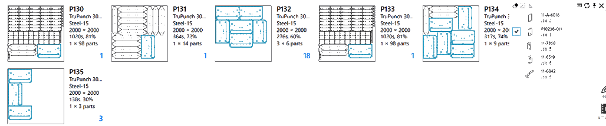
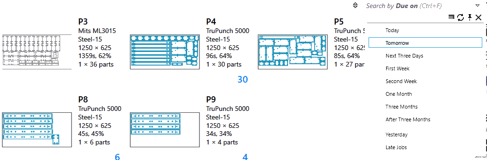

套料页面过滤器
套料页面过滤器可以基于以下标准更轻松地查找套料、活动零件和排样：
-
订单条件，如*优先级、截止日期、客户、订购零件*和 *数量*等。
-
计划/调度状态，如计划的*机床*、*待加工*板材、*已完成*板材、*排样零件、排样布局*等。
-
排样属性，如*排样效率、材料、独特*和*总零件、套料ID*和计数。

样本过滤器
零件/布局名称
*零件名称*字段将显示在套料和排样页面中。键入搜索文本，将列出包含与搜索条目匹配的零件的所有板材/套料。 image::part-name-filter.png[Part Name filter] 从建议中选择条目可将搜索范围缩小到所选零件。
 此行为也扩展到套料页面。套料页面可以使用零件名称和布局名称搜索。像零件名称字段一样，建议列表也会为布局显示。
优先级和截止日期
优先级和截止日期分配给套料中的某个零件。优先级字段，如“零件名称”，允许用户查找具有更高优先级零件的排样/套料。通过将鼠标悬停在建议菜单上以突出显示，可将高优先级零件定位在排样上。同样，指定截止日期的零件可以使用突出显示功能搜索并定位在排样上。

除了预定义的截止日期过滤器（_如“今天”、“昨天”、“明天”_等）之外，您还可以在搜索文本框中键入*yymmdd*格式的自定义日期值/范围。可接受的日期表达式为：
-
带有(不)相等运算符(<, <=, >, >=, =)的表达式，后跟日期值。例如，>=*220121*将搜索2022年1月21日当天或之后到期的所有条目。
-
日期范围表达式，如下图所示。它搜索2022年1月28日当日或之后且2022年1月30日之前到期的所有排样。